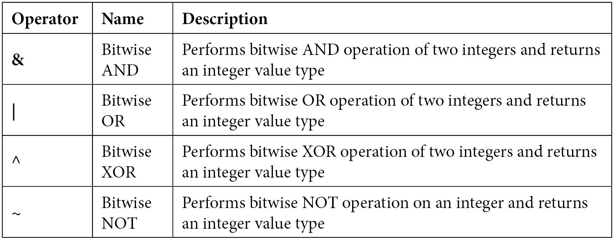

V programing
KYGnus ( Koosha Yeganeh Gnu Linux Softwares )
Introduction
• V is a statically typed and compiled programming language
• Simple and maintainable syntax
• Backward compatibility, stability, and easy to upgrade to future versions4 Introduction to V Programming
• Features of V programming
• V as a framework
• Operating systems V supports
main repository of V programing
V has an active community of developers and contributors. The community is highly
active and responsive to issues raised on GitHub. You can participate in discussions at
https://github.com/vlang/v/discussions and the team is also available on
Discord: https://discord.gg/vlang
Features of V programming
1 - Performance
2 - Speed
3 - No null values
4 - No global variables
5 - No undefined values
6 - Error handling
7 - Powerful concurrency
V has a very powerful concurrency framework. It is essential for an application running
on a high-end computing device to be able to utilize its resources, such as its CPU cores,
efficiently. Through V’s built-in concurrency model, using the go keyword, you can spawn
functions to run concurrently on other threads, different from the thread where the main
program runs. The functions that run concurrently are called coroutines.
8 - Easy cross-compilation
V allows you to generate cross-platform binaries with its cross-platform compilation
capabilities. With this feature, from a *nix OS, you can generate your application’s
executable that targets nix OS variants, as well as Windows or macOS. From a nix OS,
let’s say Ubuntu, create a file named hello.v and add the following code to it:
Easy cross-complitation
module main
fn main() {
os := $if windows { 'Windows' } $else { 'Unix' }
println('Hello, $os user!')
}
The $ symbol in the preceding code tells the compiler to evaluate the following if
condition right away during compile time. Also, windows is a built-in term that’s used to identify the OS type.
Run the preceding code using the v run hello.v command. You will see Hello, Unix user! as the output.
From the nix OS, you can run the following command to create a cross-compiled executable targeting the Windows OS.
Before you start generating a cross-compiled binary for the hello.v program, you need
to install mingw-64, which is required to generate an executable targeting the Windows
OS. To install mingw-64, run the following command:
Debian Base systems
sudo apt install -y mingw-w6410
Introduction to V Programming Alternatively, you can try
sudo apt install -y mingw-w64
distributions or
Arch Base
sudo pacman -S mingw-w64-gcc
RedHat Base Like Fedora
sudo yum install mingw32-gcc-c++
Once mingw-64 has been installed, run the following command from the Ubuntu OS to
generate the executables that can run on the Windows OS, as follows:
v -os windows hello.v
The preceding command will generate an executable named hello.exe. Now, transfer
the .exe file to the Windows OS. Running the executable from Command Prompt will output Hello, Windows user!.
You can also cross-compile to generate nix binaries from a Windows OS. All you need
to do is install Clang for Windows, as described at https://clang.llvm.org/get_started.html,
and run the following command, which generates the nix binary:
v -os linux hello.v
Similarly, to generate an executable for macOS, run the following command:
v -os macos hello.v
v to javascript
In addition to C as a primary backend, V also has JavaScript and WASM backends. V
programs can be translated into JavaScript. To translate the hello.v into JavaScript, you
can run the following command:
v -o hello.js hello.v
It is as simple as the preceding command. The outcome will produce a JavaScript file
named hello.js that reflects the functionality written in the hello.v program.
Profiling
V has a built-in profiling tool that you can use to analyze how your program is behaving
or how many times a function gets called on average by a function per call. You might
need this information to debug and optimize the application code. To run the profiler
against the V program, let’s say hello.v, run the following command:
v -profile profile.txt hello.v
Note : Notice the usage of the -profile argument, followed by the text file. Running the
preceding command generates a binary for the hello.v program. Running the binary
generates profile.txt with a detailed list of all the function calls with three columns.
Each of the columns in the text file represents the number of calls, average time per call,
and total time per call.
V as a framework
With the suite of packages V comes with, it can be considered equivalent to a framework.
A framework generally comprises all the features of full-blown programming, along
with the ability to smoothly plug and play the external packages. Using V, you can write
enterprise-grade software, even though it is still in development.
Built-in web server
The vweb web server is a built-in library. Though it is in an alpha state at the time of
writing this book, it offers various features in its current state, including the following:
• Built-in routing.
• Handling parameters.
• Templating engine.
• Very fast performance, like C on the web.
• Building the project using vweb generates a single binary, thus simplifying
deployments.
Native cross-platform GUI library
V has a cross-platform ui library. Using this library, you can leverage the power of building
cross-platform GUI applications. The ui library can be found at the official GitHub
repository at https://github.com/vlang/ui, which is licensed under GPL 3.0.
V has a ui module that uses native GUI toolkits: WinAPI/GDI+ on Windows and Cocoa
on macOS. On Linux, custom drawing is used.
Install Basic Tools
Arch:
sudo pacman -S libxi libxcursor mesa
Debian/Ubuntu:
sudo apt install libxi-dev libxcursor-dev mesa-common-dev
Fedora:
sudo dnf install libXi-devel libXcursor-devel mesa-libGL-devel
Install ui
v up
v install ui
Basic app
vi basic.v
import ui
struct App {
mut:
window &ui.Window = unsafe { nil }
first_name string
last_name string
}
fn main() {
mut app := &App{}
app.window = ui.window(
width: 600
height: 400
title: 'V UI Demo'
children: [
ui.row(
margin: ui.Margin{10, 10, 10, 10}
children: [
ui.column(
width: 200
spacing: 13
children: [
ui.textbox(
max_len: 20
width: 200
placeholder: 'First name'
text: &app.first_name
),
ui.textbox(
max_len: 50
width: 200
placeholder: 'Last name'
text: &app.last_name
),
]
),
]
),
]
)
ui.run(app.window)
}
v run basic.v
Vinix – an OS kernel written in V
inix is an effort to write a modern, fast, and useful OS using V. Vinix is purposefully
built to facilitate writing low-level software.
The Vinix OS is licensed under GPL 2.0, and you can find its entire source code on its
official GitHub repository at https://github.com/vlang/vinix. You can always
download the latest version of the Vinix OS in the form of ISO from the official link:
https://builds.vinix-os.org/repos/files/vinix/latest/vinix.iso.
Vinix aims to have the following features:
• Make a usable OS that can run on emulators, virtual machines, and physical hardware
• Target modern 64-bit architectures, CPU features, and multi-core computing
• Maintain good source-level compatibility with Linux, which helps with porting programs between Vinix and Linux
• Explore V’s capabilities in bare-metal programming
• Improve the compiler in response to the uncommon needs of bare-metal programming
Install V with Dependencies
Download the V-installer file and run your Linux operating system. This file will automatically install the V language and everything you need to work with it.
./V-installer
Variables
x := 10
mut x :=10
The variable naming convention
• A variable name can only start with the lowercase alphabet.
• A variable name cannot contain the uppercase alphabet.
• Special characters are not allowed except for underscores.
• Variable names can end with numbers and underscores.
• Lengthy variable names can have words separated with _ to enhance readability
and consistency across the code. This type of variable naming convention is often
referred to as snake_case.
Variable assignment
• := is a colon followed by an equals sign and is used to declare a variable in V.
• = is an equals sign used to reassign a value to the already declared mutable
variables only.
a, b, c := 3, 4, 5
mut i, mut j := 'Hi', 'Hello'
Mutable variables
mut <variable_name> := <initializing_value>
The syntax to update the mutable variable is as follows:
<variable_name> = <updated_value>
mut i := 10
i = 100
Immutable variables
<variable_name> := <initializing_value>
msg := 'Hello'
Note : Any variable that is declared but unused will lead to a warning or error depending on the
mode in which you run the program
The limitations of variables in V
• Global variables are not allowed in V.
• The redeclaration or redefinition of variables is not allowed in V.
• Variable shadowing is not allowed in V
V only allows you to define variables within functions and scripts-
module main
fn os() {
msg := 'GnuLinux is Best'
println(msg)
}
fn programing() {
msg := 'Vlang is Best'
println(msg)
}
fn main() {
os)
programing()
}
Working with constants in V
• The name of a constant can only start with the lowercase alphabet.
• The name of a constant cannot contain the uppercase alphabet.
• Special characters are not allowed except underscores.
• The name of a constant can end with numbers and underscores.
• Lengthy constant names can have words separated with _ to enhance readability
and consistency across code. This type of naming convention is often referred toas snake_case.
Defining constants
const <constant_name> = <constant_value>
const username = "koosha"
const password = "123123"
or
const {
username = "koosha"
password = "123123"
}
const koosha = programing{
python:90
bash:90
v:30
}
Notice that we have defined a constant named greet inside the function that doesn’t
compile. Therefore, the preceding code will fail with a message that says error: const
can only be defined at the top level (outside of functions).
Constants must be identified with their module prefix
module mod1
const greet_count = 5
pub fn do_work() {
println(mod1.greet_count)
}
Primitive Data Types
how to determine the type of
any variable using the built-in typeof() function as follows:
typeof(variable).name
The Boolean data type
completed := true
Logical operators
&& > Logical AND
|| > Logical OR
! > Logical NOT
Numeric data types
x := 1
typeof(x).name // int
i := 1_000
j := 1000
println(i == j) // true
module main
fn demo() {
h1 := 0x64
b1 := 0b1100100
o1 := 0o144
// hexadecimal starts with 0x
// binary starts with 0b
// Octal starts with 0o
println('Value of var h1 with hexadecimal value : $h1')
println('Data type of var h1 with hexadecimal
value : ${typeof(h1).name}')
println('Value of var b1 with binary value : $b1')
println('Data type of var b1 with binary value : ${typeof(b1).name}')
println('Value of var o1 with octal value : $o1')
println('Data type of var o1 with octal value : ${typeof(o1).name}')
}
fn main() {
demo()
}
Signed and unsigned integers
To start with, we have integer types i8, i16, int (32-bit integer), and i64, and unsigned
integer types byte (which is referred to as u8), u16, u32, and u64.
Signed integers support both positive and negative ranges of values, typically to represent
whole numbers. Unsigned integers don’t represent any sign and are non-negative
numbers. The following table indicates the range of all the integer types:
Type Min Max
i8 -128 127
i16 -32768 32767
i32 -2147483648 2147483647
i64 i64 9223372036854775807
byte(u8) 0 255
u16 0 65535
u32 0 4294967295
u64 0 18446744073709551615
In the preceding table, notice that the minimum value for i64 is represented as
i64(-9223372036854775807 – 1) because the C compilers parse literal values without
sign and 9223372036854775808 overflows the maximum value possible for i64, which
is 9223372036854775807. Ideally, there is no bigger type beyond i64 that holds a value
greater than 9223372036854775807. Hence, we represent the minimum value as the result
of an evaluation of subtracting 1 from -9223372036854775807.
Bitwise operators
The string data type
<VARIABLE_NAME> := ‘
h := 'hello'
println(h) // hello
println(h.len) // 5
typeof(h).name // string
A string is a read-only array of bytes
username := "koosha"
println(typeof(username[0]).name) // byte
println(username[0])
Strings are immutable by default
Declaring mutable strings
mut msg := 'Hello Bro!'
msg = 'Hope you are doing good.'
println(msg)
Declaring mutable strings
mut msg := 'Hello Koosha!'
msg += 'VLang Developer'
println(msg) // Hello koosha VLang Developer
Concatenating strings
a := 'con'
b := 'cat'
println(a + b) // concat
i := 1
j :='man army'
println('$i $j')
Extracting a substring from a string literal
a :='KYGnus'
b := a.substr(0,3)
println(b) // KYG
Splitting a string
sp :='The tiny tiger tied the tie tighter to its tail'
res := sp.split(' ') // split by space as delimiter
println(typeof(res).name) // []string
println(res) // // ['The', 'tiny', 'tiger', 'tied', 'the',
//'tie', 'tighter', 'to', 'its', 'tail']
Counting the occurrences of a substring in a string
sp := 'The tiny tiger tied the tie tighter to its tail'
println(sp.count('t')) // 10
println(sp.count('T')) // 1
println(sp.count('tie')) // 2
println(sp.count('-')) // 0
Checking for the existence of a string using contains
module main
fn main() {
hs := 'monday'
if hs.contains('mon') {
println('$hs contains mon')
} else {
println('$hs does not contains mon')
}
}
Arrays and Maps
Declaring and initializing arrays
mut friends := [ 'Mahdi_Bahadori', 'Hamed_Fard', 'Farhad_Mehryari' , 'sahand_Alipoor' , 'Amin_Pirmohamadi' ]
Declaring an empty array
mut <VAR_NAME> := []DATA_TYPE{}
mut users := []string{}
println(useers) //prints empty array: []
Now, we will append a value to the mutable array of animals strings:
users << 'Koosha'
users << 'Farhad'
println(users) // ['Koosha', 'Farhad']
Declaring array with the len property
mut i := []int{len:3}
println(i)
output : [0, 0, 0]
Declaring an array with default initial values using init
mut user := []string{len: 3, init: 'koosha'}
mut pass := []int{len: 3, init: 1}
println(user)
println(pass)
Declaring an array with an initial capacity using the cap property
mut k := []int{cap: 2}
println(k)
Working with the len and cap array properties
mut legendary_men := ['Ken Thompson', 'Richard Stallman', 'Linus Torvalds' , 'Dennis Ritchie' , 'Steve Wozniak' , 'Amir Emad Mirmirani-jadi']
println(legendary_men)
println(legendary_men.len) // Length of sports array
println(legendary_men.cap) // Capacity of sports array
Delete
legendary_men.delete(2)
Add
legendary_men << [ 'Bram Moolenaar' , 'Guido Van Rossum' ]
println(legendary_men)
println(legendary_men.len)
Accessing array elements using the index
s := legenadry_men[1]
println(s) // Ken Thompson
Accessing array elements using slices
ARRAY_VAR[STARTING_INDEX … ENDING_POSITION]
println(legenadry_men[1..3]) // prints ['Ken Thompson', 'Linus Torvalds']
n the preceding code, we slice the sports array to print the elements starting from
index 1 to position 3. Notice the terms I have used here; the first number in the [1…3]
range is 1, which indicates the index, and the other number, 3, indicates the position.
Operators used with arrays
The in operator
1 -
odd := [1, 3, 5, 7]
println(3 in odd) // prints: true
println(8 !in odd) // prints: true
2-
mut legendary_men := ['Ken Thompson', 'Richard Stallman', 'Linus Torvalds' , 'Dennis Ritchie' , 'Steve Wozniak' , 'Amir Emad Mirmirani-jadi']
println('Ken Thompson' in legendary_men)
println('Ken Thompson' !in legendary_men)
Defining a fixed-size array
mut fix := [4]int{}
println(fix) // [0, 0, 0, 0]
Updating the elements of a fixed-size array
fix[1] = 33
println(fix) //[0, 33, 0, 0]
Slicing a fixed-size array results in an ordinary array
s := fix[1..]
println(s) // [33, 0, 0]
Performing various operations on an array
Cloning an array
myarr := [1,2,3,4],5,6
mut arr := myarr.clone() // copies the array myarr to arr
println(arr)
In the preceding code, we can observe that the r immutable array is cloned to an
u mutable array.
The direct assignment of an array to a new variable will throw an error. For example,
let’s consider what happens when we try to run the following code:
s := myarr // This will throw error.
The program will throw an error with the message that says error: use array2 :=
array1.clone() instead of array2 := array1 (or use unsafe).
Another way to copy an array, as suggested in the previous error message, is to copy an
array to a new variable using unsafe:
s := unsafe { myarr }
println(s)
Sorting the elements of an integer array
mut i := [ 3, 2, 8, 1]
i.sort() // ascending order
println(i)
i.sort(a > b) //descending order
println(i)
mut os := ['Linux', 'BSD', 'Mac', 'Windows']
os.sort() // ascending order
println(os)
os.sort(a>b) // reverse order
println(os)
Filtering arrays
f := [1, 2, 3, 4, 5, 6, 7, 8, 9]
multiples_of_3 := f.filter(it % 3 == 0)
println(multiples_of_3) // [3, 6, 9]
fruits := ['apple', 'mango', 'water melon', 'musk melon']
fruits_starting_m := fruits.filter(fn (f string) bool {
return f.starts_with('m')
})
println(fruits_starting_m)
Applying mapping onto array elements
visitor := ['Tom', 'Ram', 'Rao']
res := visitor.map('Mr. $it')
println(res)
The explicit initialization of a map
mut MAP_NAME := map[KEY_TYPE]VALUE_TYPE{}
MAP_NAME[KEY_1] = VALUE_1
MAP_NAME[KEY_2] = VALUE_2
.
.
MAP_NAME[KEY_N] = VALUE_N
mut users := map[string]int{}
or
mut users := map[string]string{}
users['Linux'] = "Koosha"
users['Linux'] = 123123
The short syntax initialization of a map
mut MAP_NAME := {
KEY_1: VALUE_1
KEY_2: VALUE_2
.
.
KEY_N: VALUE_N
}
mut users := {
'Linux' : 'koosha'
'MSwindows' : 'Mahdi Bahadori - AminPrimohamadi - Masood Tavakoli'
'macOS' : 'Farhad Mehryari'
}
println(users)
The count of key-value pairs in a map
cnt := users.len
println('len of users Defined is Map is $cnt')
Retrieving a value given the key of a map
println(users['Linux']) // 'koosha'
Updating the value of the key in a map
users['Linux'] = 'Koosha - Farhad Mehryari'
println(users)
Deleting a key-value pair from a map
users.delete('macOS')
Conditionals and Iterative Statements
if CONDITION_1 {
// CONDITION_1 evaluated to true
} else if CONDITION_2 {
// CONDITION_2 evaluated to true
} else {
// None of the Conditions evaluated to true
}
fn check_os(os string){
if os == "Fedora"{
println("Fedora From RedHat")
}else if os == "Ubuntu"{
println("Ubuntu from canonical")
}else if os == "openSUSE"{
println("openSUSE from SUSE company")
}else{
println("can not Detect os company")
}
}
fn main(){
check_os("Fedora")
}
The if conditions with a goto statement
V allows you to label code and refer to the execution control using the goto keyword. The
goto statement needs to be specified with a label that indicates the control to navigate to
the label when the execution flow encounters a goto statement. A label is defined with
general text followed by a : colon symbol.
Note
A goto statement must be wrapped inside an unsafe block. This is because
goto allows the program execution flow to move past variable initialization
or return to code that accesses memory that has already been freed. As the
goto statement requires an unsafe block, it should be avoided to prevent
the risk of violating memory safety.
sample_label:
println(‘this will be called when goto is invoked’)
unsafe {
goto sample_label
}
module main
import os
fn main() {
main_linux:
inp := os.input('Enter Linux Name : ')
if inp != 'MSwindows' {
linux := inp.str()
if linux == 'Fedora' || linux == 'Ubuntu' {
println('os is Linux and Ubuntu or Fedora')
} else if linux == 'openSUSE' {
println('OS is Server Linux From Germany : openSUSE Leap')
} else {
println('Can not Detect OS')
}
} else {
unsafe {
goto main_linux
}
}
}
match
fn get_user(username string) {
match username {
'Koosha_Yeganeh' {
println('V and python Developer')
}
'Farhad_Mehryari' {
println('Nodejs and TypeScript Developer')
}
'Peyman_Ramazani' {
println('Delphi Developer')
}
'Masood_Tavakoli' {
println('asp.net Developer')
}
else {
println('The entered username is not in my developer friends group')
}
}
}
fn main() {
get_user('Koosha_Yeganeh')
}
Using match with enum types
enum Dist {
fedora
ubuntu
rocky
debian
}
fn get_os(os Dist) string {
return match os {
.fedora {
'Best Desktop Linux For Enterprise Users'
}
.ubuntu {
'Best Linux for Starting'
}
.rocky {
'Best rpm Linux For Servers'
}
.debian {
'best deb Linux for Servers'
}
}
}
fn main() {
fedora := get_os(Dist.fedora)
println(fedora)
ubuntu := get_os(Dist.ubuntu)
println(ubuntu)
}
Pattern matching using match
fn main() {
age := 18
res := match age {
0...18 { 'Person with age $age classified as a Child' }
19...120 { 'Person with age $age classified as an Adult' }
else { '$age must be in the range 0 to 120' }
}
println(res)
}
Iterative statements
for INDEX_VAR, VALUE_VAR in COLLECTION {
// access each element’s index and its value
}
fn main() {
os := {
'RedHat': 'Fedora'
'Debian': 'Ubuntu'
'SUSE' : 'openSUSE Leap'
}
for operation, distro in os {
println('os is ${operation} and distribution is ${distro}')
}
linux := ['Fedora', 'Ubuntu', 'openSUSE']
for idx, ele in linux {
println('${idx} - ${ele}')
}
}
In the preceding code, the for loop iterates over an array named linux with the values of a string data type
The idx variable will always be
of the integer data type and signifies the index of each element, starting from 0, and increments by 1 for every iteration. The ele variable holds the value of the element for that iteration
A for loop without an index on the array
module main
fn main() {
col := [1, 2, 3, 4, 5, 6, 7]
for val in col {
if val % 2 == 0 {
println('$val is Even')
} else {
println('$val is Odd')
}
}
}
A traditional C-style for loop
module main
fn main() {
sample := [3, 4, 23, 12, 4, 1, 45, 12, 42, 17, 92,
38]
for i := 0; i < sample.len; i += 3 {
println(sample[i])
}
}
A for loop on a range
fn main() {
for val in 0 .. 4 {
println(val)
}
}
A bare for loop or an infinite for loop
fn main() {
mut count := 1
for {
println('Hi $count times')
count += 1
}
}
Using break in a for loop
fn main() {
mut count := 0
input := os.input('Enter number of times to Greet:')
limit := input.int()
for {
if count >= limit {
break
}
println('Hi')
count += 1
}
println('Greeted Hi $count times')
}
Using continue in a for loop
fn main() {
for i in 0 .. 10 {
if i % 2 == 0 { // skips printing number
// that is a multiple of 2
continue
}
println(i)
}
Anonymous functions
module main
fn main() {
greet := fn (name string) {
println('Hello, $name')
}
greet('Jadi')
greet('Hasan Azimi')
}
Higher-order functions that accept other functions as input arguments
fn hello_back()string{
return "Hello New User"
}
import os
fn say_hello() string {
username := os.input('Enter username : ')
password := os.input('Enter Password : ')
if username == 'koosha' && password == '102030' {
return 'You are Logined'
} else {
return 'Login ERROR'
}
}
fn main() {
ut name := say_hello()
println(name)
}
fn adder(i int, j int) int {
return i + j
}
fn subtractor(i int, j int) int {
return i - j
}
fn multiplier(i int, j int) int {
return i * j
}
fn main(){
mut result := subtractor(2023,1991)
println("Linux Born at : ${result}")
fn get_os(name string) string {
return 'Hello ${name}'
}
fn main() {
res := get_os('koosha')
println(res)
}
Functions can take zero or more input arguments
fn add(a int, b int) int {
return a + b
}
res := add(2, 4)
println(res)
fn greet_and_message_length(name string) (string, int) {
mut greeting := 'Hello , ' + name + '!'
return greeting, greeting.len
}
i, j := greet_and_message_length('Fedora')
println(i)
println(j)
fn get_input_len(username string, password string) int {
data := username + password
return data.len
}
fn main() {
length := get_input_len('koosha', '102030')
println(length)
}
Ignoring return values from functions
i, _ := greet_and_message_length('Fedora')
Functions can call other accessible functions
fn greet(p string) string {
return 'Hello, $p!'
}
fn welcome(p string) string {
msg := 'Nice to meet you!'
mut g := greet(p)
g = g + ' $msg'
return g
}
fn main(){
res := welcome('Visitor')
println(res)
}
Functions allow only arrays, interfaces, maps,pointers, and structs as mutable arguments
fn increment_array_items(arr []int, inc int) []int {
mut tmp := arr.clone()
for mut i in tmp {
i += inc
}
return tmp
}
a := [5, 6]
res := increment_array_items(a, 100)
println('a: $a')
println('res: $res')
Function declarations in script mode should come before all script statements
#!/usr/local/bin/v run
cnt := 2
for i in 0 .. cnt {
log('iteration $i')
}
fn log(msg string) {
println(msg)
}
Functions do not allow access to module variables or global variables
functions in V are pure by default. This means that functions can only process the arguments they are passed with and return the processed output. The functions cannot access variables that are defined outside of the function body.
However, V enables us to declare global variables. When it comes to the implementation of low-level applications such as programming OS kernels or system drivers, you might need to have the variables accessed globally. In such situations, you can declare variables as global and run the V program with the -enable-globals argument.
Now, we will examine how to declare global variables and run V programming using the -enable-globals flag. The code that we are going to work on will be structured in the following directory hierarchy:
The syntax to create a global variable in V is as follows:
__global(
<variable_name> <data_type>
)
// file: mymod/mymod.v
module mymod
__global (
msg string
)
In the mymod.v file, we defined a msg global variable of the string data type. Fromthe command-line Terminal, navigate to the parent directory where we have main.v located. To run main.v, you need to provide -enable-globals as an argument to V, as follows:
v -enable-globals run main.v
You will see the following output:
global variable demo
Functions are private by default and can be exposed to other modules using the pub access modifier keyword
By default, all of the functions declared in V are private and are only accessible within the default scope that they are defined in. To expose the methods to the outside world, they are decorated with the pub keyword, which denotes public access.

// file: mod/mod.v
module mod
fn get_name() string {
return 'Hello to Koosha Yeganeh'
}
pub fn get_username() string {
return 'username of Fedora is KYGnus'
}
pub fn get_test() string {
hello := get_name()
return 'username : ' + hello + 'user and pass is Test'
}
import mod
test := mod.get_test()
g := mod.get_username()
println(g)
println(test)
Functions allow you to defer the execution flow using the defer block
module main
fn void_func_defer() {
println('Hello')
defer {
println('Hi from defer block')
}
println('How are you?')
// the defer block will be executed when the
// execution control reaches here
}
fn main() {
void_func_defer()
}
Result :
Hello
How are you?
Hi from Defer Block
struct
Structs in V allow you to define composite objects. They facilitate you to create complex data structures, allowing its fields to have different data types. The fields of the struct can be primitive data types, enums, or could be another struct.
struct Linux_Users {
username string
password int
id string
os_hash int
}
fn main() {
fedora := Linux_Users{
username: 'koosha'
password: 123123
id: 'main_user'
os_hash: 159753123654
}
println('username is ${fedora.username} and password is : ${fedora.password}')
}
heap structs
When a struct is initialized, its memory is allocated on the stack by default. V allows you to initialize a struct and allocates its memory on the heap, provided that you specify & before the struct name during initialization, as shown here:
Stack vs Heap: What’s the difference?
Stack vs Heap Memory Allocation
n1 := &Linux_users{'Farhad', 1 , 'Unix Main User' , 123456}
Heap structs are particularly useful when dealing with structs that carry large amounts of data. Therefore, opting for heap structs can reduce explicit memory allocations
Updating the fields of a struct
struct Users {
mut:
username string
password int
id int
}
mut fedora := Users{
username: 'Koosha'
password: 123123
id: 100
}
println(fedora.username)
fedora.username = 'kooshakooshadv'
println(fedora.username)
• The variable to which the struct is declared must be mutable.
• You must specify the struct name to the right-hand side of the = operator followed
by the struct fields that you wish to update. The values must be enclosed in curly
braces ({}).
• The field names must be specified as literals and only then can they be assigned
values separated by a : sign.
• The unspecified fields in the update statements are assigned zero by default.
Grouping fields in a struct using access modifiers
A struct allows the filtering of its fields at various access levels. With the help of the keywords pub, for public access of fields, and mut, to indicate mutable fields, you can control the way the fields of a struct can be accessed.The various access control levels that could be applied to the fields of a struct are tabulated here:

pub struct Note {
pub:
id int
pub mut:
message string
status bool
}
We have marked the Note struct as pub. We also marked the id field as public by declaring it under the pub group. The fields under the pub group are public and are read-only outside the module. Also, the message and status fields are marked with the pub and mut access modifiers. Defining struct fields under the pub mut group indicates that the struct fields are accessible and mutable within and outside the module
where Note is defined.
pub struct Note {
pub:
id int
pub mut:
message string
}
mut name := Note{
id: 123
message: 'Hello New User'
}
println(name.id)
struct Users {
pub mut:
username string
password int
mut:
text string
id int
}
n := Users{
username: 'Fedora'
password: 789
text: 'Fedora Workstation From RedHat'
id: 555
}
println(n.username)
Defining required fields in a struct
pub struct Note {
pub:
id
int
pub mut:
message string [required]
status bool
}
struct Users {
pub mut:
username string [required]
password int
mut:
text string
id int
}
n := Users{
username: 'Fedora'
password: 789
text: 'Fedora Workstation From RedHat'
id: 555
}
println(n.username)
Defining struct fields with default values
import time
pub struct Note {
pub:
id
int
created time.Time = time.now()
pub mut:
message string [required]
status bool
due
time.Time = time.now().add_days(1)
}
Defining methods for a struct
fn (r RECEIVER_TYPE) METHOD_NAME(OPTIONAL_INPUT_ARGUMENTS)
RETURN_TYPE {
METHOD BODY
}
Modules
The syntax to define a module
module <module_name>
The syntax to import a module
import <module_name>
Working with modules
• The directory name must match the module name.
• Imported modules must be consumed in the code.
• Multiple V files in the module must define the same module.
• Both private and public members of a module can be accessed from anywhere within the module.
• Only public members of the module are accessible outside of the module.
• Cyclic imports are not allowed.
• Define init functions to execute one-time module-level initializer functionality.
Creating a Module
We will create a module in our modulebasics project.
1- The first principle to note when creating a module is that the Directory name must match the module name. Failing to have a similar name for the directory and module will lead to an error with a message that says builder error: bad module definition.Let’s create a module named mod1 by running the following command from the Terminal:
v new app
mkdir login

module login
import os
pub fn login() string {
username := os.input('Enter username : ')
password := os.input('Enter Password : ')
if username == 'Koosha' && password == 'K102030k' {
return 'Logined'
} else {
return 'Login ERROR'
}
}
cat src/main.v
module main
import login
fn main() {
login_name := login.login()
println(login_name)
}
v run .
Working with multiple files in a module
If there are multiple files in a module, then all of the files must define the same module definition. Failing to define the same module for all the files within a module will lead to an error that is similar to builder error: bad module definition.
The init function for a module
Modules in V allow you to define a function named init that is automatically executed when you import the module where it is defined. The init functions of a module act as an initializer of certain functionality, such as establishing database connections or initializing C libraries or module-specific settings,if any. To define the initializer function, you must meet the following conditions:
• The init function must only be defined once inside the module.
• The init function must not be marked as public.
• The init function must not accept any input arguments.
• The init function must not have a return type.
module main
import os
pub fn dist()string{
os_name := "Fedora"
println(os_name)
}
fn init(){
println("Hello from init Function")
}
Accessing the constants of a module
// file : mod1/file1.v
module mod1
pub const vmsg = 'Hello From V Lang'
// file: modulebasics.v
module main
import mod1
fn main() {
println(mod1.vmsg)
}
Advanced Concepts in V Programming
Introducing concurrency
Concurrency means running tasks concurrently. While this might seem like a very
abstract definition, let’s consider the following real-world example. You wake up in the
morning of winter, and you need hot water to bathe. You can only bathe when the water
is hot enough. However, you have other morning chores to finish off while the water gets
hot. So, you turn on the water heater and then, let’s say, you brush your teeth for some
time while the water heater indicates the water is hot. Then, you switch off the water
heater, enjoy a hot shower, and get ready for the day
Getting started with concurrency
Understanding the time module
import time
The time module in V has a vast number of functionalities, including telling the current
time on the system using the time.now() expression. If we are just interested in the
hours, minutes, and seconds part of the time at the time of execution, you can write the
corresponding expression as
time.now().hhmmss()
sleep
import time
time.sleep(0.5 * time.second)
stopwatch
sw.elapsed().nanoseconds()
In the aforementioned syntax, the sw variable holds the instance of initiation of the
stopwatch using time.new_stopwatch(). The duration of time that’s elapsed
is in nanoseconds, which is of the i64 type. You can have the elapsed time in
other units instead of calling nanoseconds(), such as microseconds() and
milliseconds(), which return the i64 values of the time that’s elapsed. Alternatively,
the seconds(), minutes(), and hours() methods return f64 values.
This feature is handy for measuring the time that’s elapsed while running a set of
instructions. For example, the following code demonstrates the time elapsed from
the moment the program starts until it finishes printing the value of the i variable for
module main
import time
fn main() {
sw := time.new_stopwatch()
for i in 1 .. 5 {
println('$i')
}
println('Total time took to finish:
$sw.elapsed().seconds() seconds')
}
The go keyword syntax
go FUNCTION_NAME_1(OPTIONAL_ARGUMENTS)
h := go FUNCTION_NAME_1(OPTIONAL_ARGUMENTS)
h.wait()
h := go FUNCTION_NAME_1(OPTIONAL_ARGUMENTS)
h.wait()
Channels – An Advanced Concurrency Pattern
The term channel indicates a medium or a path that allows you to transfer information or data from one end to the other. In the context of concurrency, channels allow us to share data by establishing a communication channel between the concurrent tasks. These concurrent tasks are often termed coroutines, which share the data by communicating through the channels. Channels are advanced concurrency patterns in V that solve the problem of explicitly handling data synchronization techniques among coroutines. We can communicate between the coroutines with the help of shared objects. In V, these can be structs, arrays, or maps. But the problem with this approach is that you need to take explicit care of concurrency synchronization techniques such as protecting the shared objects using locks such as the read-only rlock or the read/write lock to prevent data races, as we learned in the Sharing data between the main thread and concurrent tasks section of Chapter 10, Concurrency.
Channels in V can be compared to queues. Generally, a queue allows things or elements to pass through it in one direction. The first one to enter the queue is the first one to exit the queue. So, the values that are sent to the channel are accessed in a First In First Out (FIFO) manner.
Syntax to define a channel
CHANNEL_VARIABLE := chan DATA_TYPE{OPTIONAL_CAPACITY: CAPACITY_
VALUE}
In this syntax, the channel variable will be of the chan DATA_TYPE. OPTIONAL_CAPACITY type. This is a syntactical representation of the cap property that accepts an integer value. The cap property is available on a channel variable that represents the capacity of the values the channel could hold. The type could be any type, such as a primitive type, or it could be a struct, a map, or an array.
Having understood the basic syntax, we will learn about unbuffered channels and buffered channels in the following subsections.
Unbuffered channel
A channel defined without capacity is referred to as an unbuffered channel. An unbuffered channel has a capacity of 0 by default. The following code shows how to define an unbuffered channel. This channel accepts integer values that are pushed onto it:
uc := chan int{}
println(uc.cap) // 0
println(typeof(uc).name) // chan int
Buffered channel
Unlike unbuffered channels, a buffered channel is defined with a non-zero capacity, with its cap property assigned with an integer value. The following code shows how to define a buffered channel:
bc := chan string{cap: 2}
println(bc.cap)
println(typeof(bc).name)
Channel operations
Arrow operator <-
The direction of the arrow operator, <-, indicates that the values always enter the channel from the right and exit the channel to the left.
Syntax to push data into a channel
ch := chan VALUE_TYPE {OPTIONAL_CAPACITY: CAPACITY_VALUE}
ch <- VALUE_TO_PUSH
ch := chan int{cap: 1}
ch <- 51
println(ch)
Place the preceding code in a file and run it using the v run filename.v command.
You should see that the console halts and doesn’t show any output. This means that the program entered the blocked state as soon as it encountered the push operation; that is, ch <- 51. We will understand why using push operations on an unbuffered channel
blocks the program’s execution in more detail in the Working with unbuffered channels section of this chapter.
Popping the data out of the channel
ch := chan int{cap: 1}
ch <- 51
println('channel after push: $ch.str()')
println('popping value out of the channel and storing it in immutable variable x')
x := <-ch
println('value of x: $x')
println('channel after pop: $ch.str()')
Channel properties
You can obtain information about a channel variable by accessing the properties
it exposes. The properties of the channel include len, cap, and closed. These properties provide the following information about a channel at the time of accessing them:
- [] cap is an integer property that indicates the capacity of the channel. This is 0 for the unbuffered channel. In the case of a buffer ed channel, the cap property indicates the maximum number of values a channel can hold.
- [] len is an integer property that indicates the actual number of values that the channel holds at the time of accessing this property. At any given point in time, the len value can only be less than or equal to the cap property.
- [] closed is a Boolean property, and when its value is true, it indicates that the channel is closed. If a channel is not closed, the v alue of the closed property will be false.
Understanding channel properties using examples
b := chan string{cap: 2}
b <- 'hello'
println('capacity: $b.cap')
println('length: $b.len')
println('closed: $b.closed')
channel Methods
V exposes some public methods to control a channel’s behavior. These methods include the following:
• try_push()
• try_pop()
• close()
Except for the close() method, the try_push() and try_pop() methods have a return value, which is a built-in enum type called ChanState. The ChanState enum has three enum values:
• not_ready
• closed
• success
Performing try_push() or try_pop() on a channel can return one of the three aforementioned states. In this section, we will learn how to work with the try_push() Function with buffered and unbuffered channels and then we cover how to work with the try_pop() and close() methods.
Using try_push() on unbuffered channels
try_push() gracefully pushes data into the channel and returns the status in the form of an enum value from ChanState. The try_push() method accepts values of the type that the channel accepts. For an unbuffered channel, the try_push() operation returns a .not_ready value of ChanState enum, when there is no coroutine ready to pop a value out of the channel. To demonstrate this, consider the following code:
v := 'hi'
ch := chan string{} // unbuffered channel
res := ch.try_push(v)
println(res) // not_ready
Using try_push() on buffered channels
x := 'hello'
ch := chan string{cap: 2}
for {
status := ch.try_push(x)
if status == .success {
println('Channel length: $ch.len')
} else {
println('channel status: $status')
break
}
}
Working with unbuffered channels
module main
fn main() {
ch := chan int{}
defer {
ch.close()
}
ch <- 3
x := <-ch
println(x)
println('End main')
}
os
base
os.base("/home/koosha/Desktop/File.exe")
Result: File.exe
chdir
os.chdir("/home/koosha/Desktop")!
getwd
os.getwd()
cp
os.cp("test.v" , "/home/koosha/Desktop")!
cp_all
cp_all will recursively copy src to dst,optionally overwriting files or dirs in dst
os.cp_all("/home/koosha/Desktop" , "/run/media/koosha/SSD/Desktop")!
create
create creates or opens a file at a specified location and returns a write-only File object.
os.create("/tmp/V/testFilecreate.v")!
execute
execute starts the specified command, waits for it to complete, and returns its output.
os.execute("ls")
execute_or_exit
os.execute_or_exit("ls")
exists
os.exists("/home/koosha/Desktop")
get_line
os.get_line()
input
os.input("Enter UserName : ")
input_password
os.input_password("password : ")
import os
fn main(){
username := os.input("username : ")
password := os.input_password("password : ")!
if username == "koosha" && password == "159753"{
println("Logined")
}else{
println("Login ERROR")
}
}
getuid and getpid
os.getpid()
os.geteuid()
is_dir and is_dir_empty
os.id_dir("/home/koosha/Desktop")
os.id_dir_empty("/home/koosha/Desktop")
mkdir
fn mkdir(path string, params MkdirParams) !
os.mkdir("/tmp/test")!
mv
os.mv("/home/koosha/Desktop/File1.v" , "/home/koosha/Documents")!
open
os.open("/tmp/test.txt")!
open_append
open_append tries to open a file from a given path.
If successful, it and returns a File for appending.
os.open_append("/home/koosha/Downloads/Test.txt")!
read_file
os.readfile("test.txt")!
read_bytes
os.read_bytes("test.txt")
rename and rename_dir
os.rename("test.txt" , "test.v")!
os.rename_dir("desktop" , "Desktop")!
rm and rmdir and rmdir_all
os.rm("test.txt")
os.rmdir("/tmp/Test")!
os.rmdir_all("/Documents")!
system
system works like exec, but only returns a return code.
os.system("ls *.txt")
uname
os.uname()
wait
os.wait()
walk_ext
walk_ext returns a recursive list of all files in path ending with ext.
os.walk_ext("/home/koosha/Documents" , "md")
write_file
os.write_file("VLang.txt" , "write_file writes text data to the file in path.\nIf path exists, the contents of path will be overwritten with the contents of text.")
MYSQL
mport db.mysql
// Create connection
mut connection := mysql.Connection{
username: 'root'
dbname: 'mysql'
}
// Connect to server
connection.connect()?
// Change the default database
connection.select_db('db_users')?
// Do a query
get_users_query_result := connection.query('SELECT * FROM users')?
// Get the result as maps
for user in get_users_query_result.maps() {
// Access the name of user
println(user['name'])
}
// Free the query result
get_users_query_result.free()
// Close the connection if needed
connection.close()
fn connect(config Config) !DB
fn debug(debug string)
optimize python app with VLang
To optimize a Python script using Vlang, you would need to rewrite the performance-critical parts of your code in Vlang. V is a statically typed, compiled language that’s designed for performance, and it can be integrated with Python code where necessary. Here’s a general approach to optimize a Python script with Vlang:
- Identify Performance Bottlenecks:
- Use profiling tools (e.g., cProfile) to identify which parts of your Python code are consuming the most time.
- Focus on the most time-consuming functions or loops, as optimizing these will provide the most significant performance improvements.
- Rewrite Critical Code in Vlang:
- Install the Vlang compiler (https://vlang.io/).
- Rewrite the identified performance-critical functions or loops in Vlang. Vlang’s static typing and efficient memory management can lead to faster execution.
- Export the Vlang code as a shared library (e.g., a dynamic-link library on Windows or a shared object on Linux).
- Create Python Bindings:
- To call the Vlang code from Python, you’ll need to create Python bindings. You can use libraries like CFFI or ctypes to create these bindings.
- Load the Vlang shared library in Python and create Python wrappers for the Vlang functions.
- Test and Benchmark:
- Before deploying the optimized code, test it extensively to ensure correctness and measure its performance improvements. You can use Python’s timeit module or external benchmarking tools.
- Integration:
- Replace the original Python functions with your optimized Vlang functions where appropriate.
- Ensure that you handle data exchange between Python and Vlang correctly using the Python bindings you created.
- Profiling and Fine-Tuning:
- Profile the entire application again to ensure that your optimizations have improved the performance as expected.
- Fine-tune the Vlang code as needed to further enhance performance.
- Error Handling:
- Be sure to handle errors and exceptions correctly when calling Vlang code from Python to maintain application stability.
Here’s a simple example of using Vlang with Python:
Vlang code (example.v):
v
module example
fn add(a int, b int) int {
return a + b
}
Python code:
python
import ctypes
# Load the Vlang shared library
example = ctypes.CDLL('./example.so')
# Call the Vlang function from Python
result = example.add(5, 3)
print(result) # Should print 8
Remember that optimizing code with Vlang requires careful consideration and may not be necessary for all Python projects. It’s most effective for performance-critical parts of your application, and you should always measure and test your optimizations to ensure they provide the expected benefits.
Module List : https://vpm.url4e.com/
Resources
Getting Started with V Programming from Navule Pavan Kumar Rao
https://github.com/vlang/v
https://vpm.url4e.com/